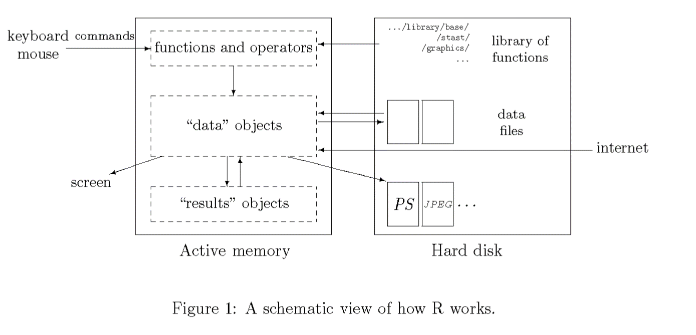

3 PR2-Importación de datos.
Recuerda siempre cómo “piensa” R.

4 Importación de datos en R.
En la sección anterior hemos visto lo fundamental sobre estructuras y hemos comentado las características de una estructura clave en el manejo de datos en R: dataframe.
En esta práctica vamos a ver cómo importar datos utilizando diferentes funciones dependiendo del origen.
Como comentábamos, la importación consiste en construir un objeto, generalmente de tipo dataframe a partir de un archivo externo.
Para hacerlo necesitamos que el archivo externo tenga una estructura matricial (.xlsx) o que pueda convertirse en matricial (.csv) porque incluya caracteres de separación que le indiquen al programa que lo importa, en nuestro caso R, cuando cambiamos de columna o de fila.
Se han incorporado muchas funciones a R que realizan la importación de forma casi automática, pero entender sus fundamentos puede ayudar a entender y resolver problemas de importación.
Nos vamos a centrar en dos estructuras desde las que con frecuencia vamos a importar datos.
4.0.1 Importación desde archivo .csv (Comma Separated Values).
Una de las más sencillas si el archivo .csv está bien construido. Un archivo .csv no es más que un archivo de texto en el que el carácter coma (“,”) separa campos (variables) y el salgo de línea separa registros (individuos/elementos).
En realidad cualquier estructura de texto que utilice un separador de campos (variables) y de registros (líneas) es susceptible de ser importada. R tiene una función muy básica para hacerlo (read.table), a la que le indicamos el carácter separador de campos (“,”, “;”,“/”,“/tab”…), si el archivo contiene encabezado (header), una primera línea en la que se almacenan los nombres de las variables, o el carácter que utiliza como separador decimal. En realidad tiene muchos otros argumentos, pero no son necesarios para realizar importaciones sencillas. Por ejemplo, la función que utilizaremos a continuación en realida es una adaptación de esta en la que por defecto se establece que el separador de campos es la coma (“,”), entre otros argumentos.
Como comentábamos, el .csv es un formato estándar, que pesa poco y hay funciones diseñadas para leer este tipo de archivos.
Entre los archivos de trabajo, hemos incluido un archivo llamado myiam2. Es un archivo con extensión .csv que contiene una base de datos de pacientes que habían padecido un infarto.
Vamos a crear un dataframe importándola y como sabemos que se trata de un csv, vamos a utilizar al función read.csv del paquete utils. En este caso no hace falta cargarla porque este paquete se carga al iniciar R.
Recuerde que hay que indicar el dirección en la que está el archivo. En este ejemplo, que explicaremos en clase, vamos a utilizar direccionamiento relativo al directorio en el que está el archivo desde mi directorio de trabajo.
Importante. La dirección de las barras de dirección (las que separan directorios y subdirectorios) en R vienen del mundo UNIX (un sistema operativo diferente a Windows), por eso las barras se inclinan hacia el lado contrario. En clase veremos alguna función que facilita copiar y pegar las direcciones desde Windows adaptándolas al lenguaje de R. Se puede hacer invirtiendo las barras que vienen de Windows, o duplicándolas manteniendo la dirección.
iam<-read.csv('_data/myiam2.csv') # Utilizando relative path.La salidas de las funciones read suele ser un dataframe, y por ello podemos asignarlo directamente a un objeto, en el ejemplo el objeto (dataframe) llamado iam.
Pedimos las primeras filas del dataframe.
head(iam) Id Age Sex Height Weight Smoke ami
1 1 65.24100 1 1.62 74.56 0 0
2 2 62.45461 0 1.56 60.89 0 0
3 3 64.68328 0 1.69 74.20 0 0
4 4 65.36045 0 1.34 43.92 0 0
5 5 70.71094 0 1.81 80.86 1 0
6 6 65.42030 0 1.78 80.56 0 0También podemos pedir la estructura que nos da mucha información sobre el contenido del dataframe.
str(iam)'data.frame': 100 obs. of 7 variables:
$ Id : int 1 2 3 4 5 6 7 8 9 10 ...
$ Age : num 65.2 62.5 64.7 65.4 70.7 ...
$ Sex : int 1 0 0 0 0 0 1 0 0 0 ...
$ Height: num 1.62 1.56 1.69 1.34 1.81 1.78 1.79 1.44 1.56 1.87 ...
$ Weight: num 74.6 60.9 74.2 43.9 80.9 ...
$ Smoke : int 0 0 0 0 1 0 0 1 0 0 ...
$ ami : int 0 0 0 0 0 0 0 1 0 0 ...En realidad esta estructura también está visible si desplegamos el dataframe en la pestaña Environment, ventana data del panel superior derecho.

Esta función nos informa del contenido del objeto. Al tratarse de un dataframe, nos muestra las variables, el tipo de dato que almacena cada una (en este ejemplo solo hay numérico y enteros) y las primeras observaciones. Es el primer punto de control en el que podemos observar si la importación ha ido como esperábamos.
4.0.2 Importación desde archivo .xlsx (Excel).
El concepto de importación es el mismo independientemente de la fuente de los datos, pero las funciones a utilizar cambian para responder a las especificidades del tipo de archivo.
R no cuenta con función propia para leer un archivo xlsx, pero otras librerías lo han incorporado.
El siguiente ejemplo crea el mismo dataframe, pero en esta ocasión desde un archivo .xlsx. Utilizaremos la librería readxl (si no la tiene instalada, hágalo antes de ejecutar el siguiente código).
Podríamos cargar la librería con library(readxl), pero vamos a aprovechar para mostrar cómo podemos llamar a una biblioteca (library) sin cargarla en memoria. La clave es anteceder el nombre de la función con el nombre de la biblioteca seguido de “::”.
iam2<-readxl::read_xlsx('_data/myiam3.xlsx')Pedimos la estructura
str(iam2)tibble [100 × 8] (S3: tbl_df/tbl/data.frame)
$ Id : num [1:100] 1 2 3 4 5 6 7 8 9 10 ...
$ Sex : chr [1:100] "1" "0" "0" "0" ...
$ Height: num [1:100] 1.62 1.56 1.69 1.34 1.81 1.78 1.79 1.44 1.56 1.87 ...
$ Weight: num [1:100] 74.6 60.9 74.2 43.9 80.9 ...
$ Smoke : chr [1:100] "0" "0" "0" "0" ...
$ Ami : chr [1:100] "0" "0" "0" "0" ...
$ fecing: POSIXct[1:100], format: "2015-03-18 21:05:08" "2015-08-07 04:23:18" ...
$ fnac : POSIXct[1:100], format: "1949-12-20 14:28:28" "1953-02-21 15:15:57" ...En realidad vemos que la nueva base de datos no es exactamente la anterior. Las variables Sex, Smoke y Ami son de tipo carácter. Además no incluye la edad, pero sí la fecha de ingreso y la fecha de nacimiento.
No es infrecuente que nuestros datos procedan de otro paquete estadístico o tipo de fichero. La biblioteca foreign incluye funciones para acometer esta tarea desde varias fuentes, incluyendo los tres software de análisis más habituales en nuestro contexto (SAS,SPSS,Stata).
| Programa |
Paquete |
Función |
Argumentos y opciones más frecuentes/predefinidas |
|---|---|---|---|
| SPSS |
foreign |
read.spss() |
read.spss(file, use.value.labels = TRUE, to.data.frame = FALSE, max.value.labels = Inf, trim.factor.names = FALSE, trim_values = TRUE, reencode = NA, use.missings = to.data.frame) |
| Stata |
foreign |
read.dta() |
read.dta(file, convert.dates = TRUE, convert.factors = TRUE, missing.type = FALSE, convert.underscore = FALSE, warn.missing.labels = TRUE) |
| SAS |
haven |
read_sas() |
read_sas(data_file, catalog_file = NULL, encoding = NULL, cols_only = NULL) |
También existen paquetes más específicos para importar desde alguno de ellos, como readstata13, que permiten opciones adicionales.
4.1 Guardar los datos para la siguiente sesión.
Una vez hemos trabajado los datos en R, no tendría mucho sentido volver a exportarlos con las nuevas variables creadas, salvo que deseemos enviárselo a alguien que no utilice R o no pueda importar su formato de datos.
Podríamos guardar toda la imagen del espacio de trabajo (Workspace) y cargarla antes de trabajar con el nuevo dataframe en la siguiente sesión.
Sin embargo, y aunque cueste entenderlo al principio, es preferible guadar la menor cantidad de objetos posibles y tratar de que sea el código el que lo construya cada vez.
Si el objeto es muy grande o lleva mucho tiempo volver a generarlo con código, puede estar justificado guardar el o los objetos concretos.
En el caso del dataframe tenemos una estructura de datos que le sirve a R para gestionar esta parte. Son los archivos .RDS.
En este vínculo explican las dos opciones, pero de momento prefiero utilizar un archivo .RDS. Solo necesita un par de argumentos, el nombre del objeto dataframe que queremos guardar y el nombre del archivo en el que queremos guardarlo.
El dataframe que nos interesa es iam, porque contiene las nuevas variables y las transformaciones que hemos realizado. Incluyo los nombres de los argumentos, pero dado que son los dos primeros en realidad no haría falta1.
saveRDS(object=iam,file='iam.RDS')Es importante que aprendáis a salvarlo (ahora y tras el capítulo de manipulación de datos), porque lo utilizaremos en futuras sesiones.
Recordad lo que comenté en la sesión anterior sobre las posiciones relevantes al llamar a las funciones↩︎